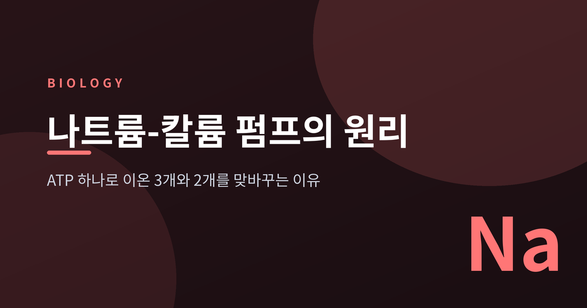
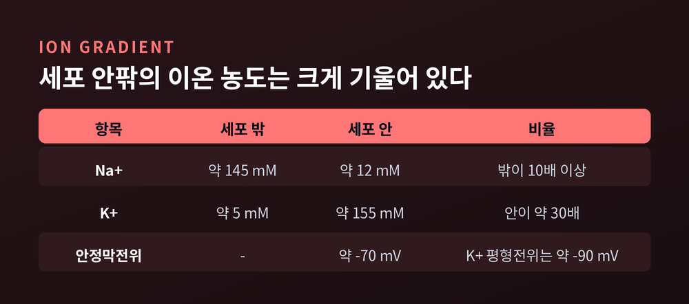
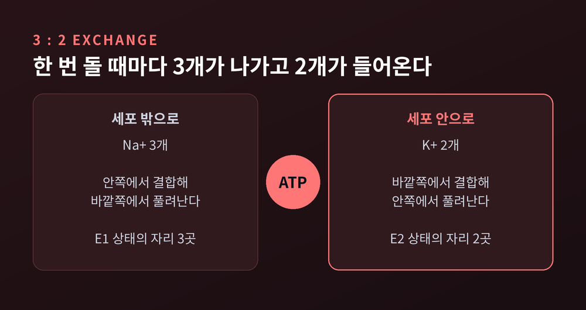
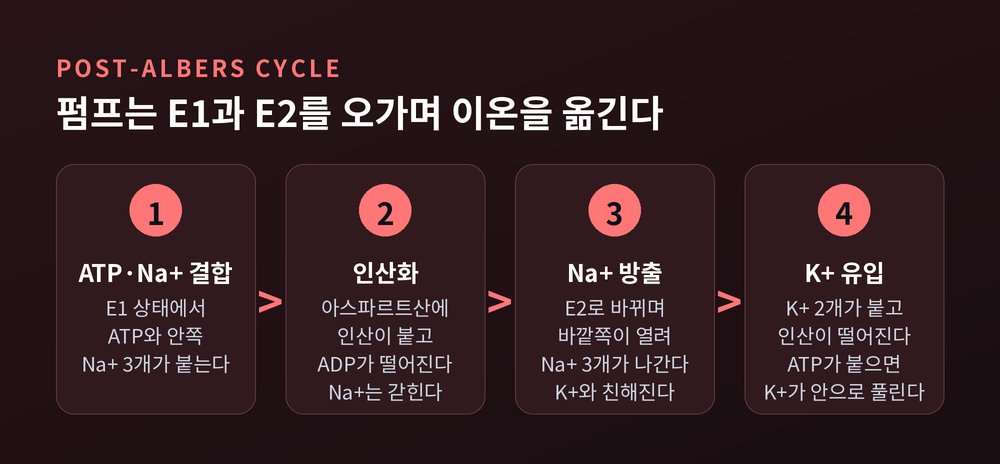
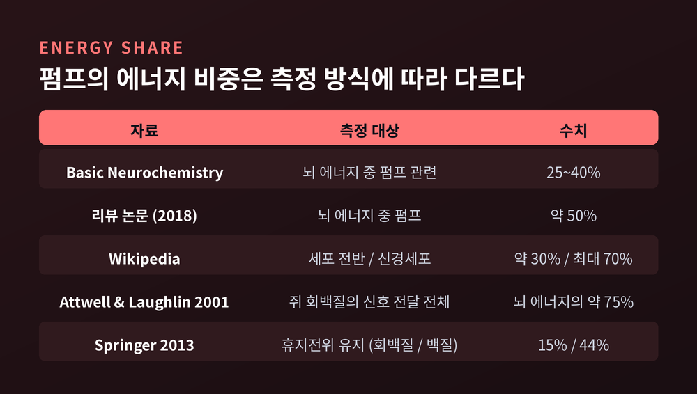
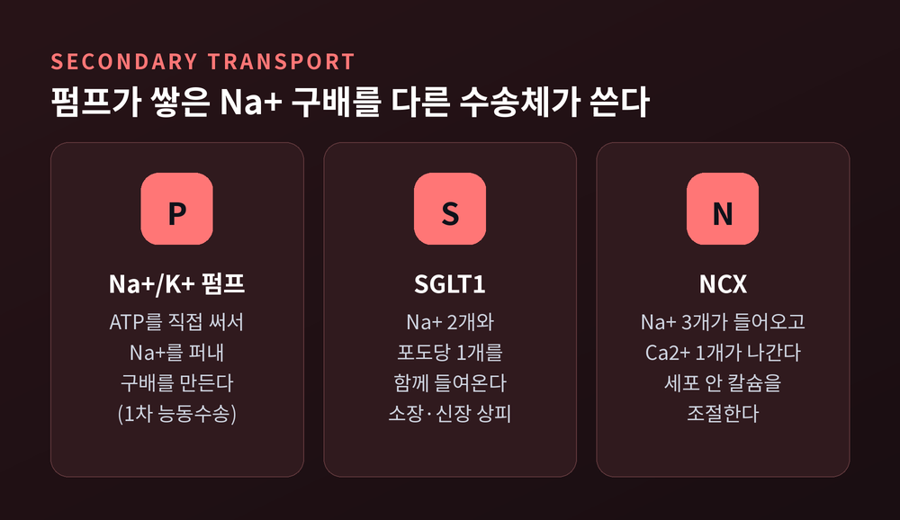
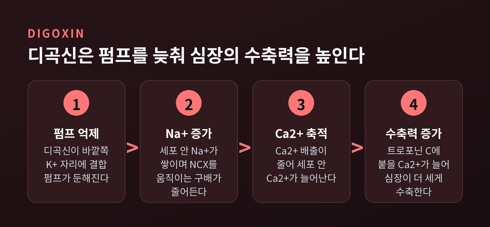

오늘은 나트륨-칼륨 펌프(Na+/K+-ATPase)에 대해 이야기해 보려 합니다.
이 펌프는 ATP 1분자를 쓸 때마다 나트륨 이온(Na+) 3개를 세포 밖으로 내보내고 칼륨 이온(K+) 2개를 안으로 들여옵니다.
이 단순한 맞교환이 세포의 전기 신호와 부피, 그리고 영양소 흡수까지 떠받칩니다.
세포막을 사이에 두고 이온 분포는 한쪽으로 크게 기울어 있습니다.
교재에 실린 대표값으로 보면 Na+는 세포 밖이 약 145 mM, 안이 약 12 mM입니다.
K+는 반대로 안이 약 155 mM, 밖이 약 5 mM입니다.
Na+는 밖이 안보다 10배 넘게 많고, K+는 안이 밖보다 30배쯤 많은 셈입니다.
이 기울기는 저절로 유지되지 않습니다.
막에는 이온이 조금씩 새는 통로가 늘 열려 있어서, 방치하면 농도 차는 서서히 사라집니다.
새어 나간 만큼 다시 퍼 올리는 일을 맡은 것이 나트륨-칼륨 펌프입니다.
농도 차를 만드는 데 그치지 않고, 그 차이를 하루 종일 지켜 내는 장치입니다.

이 펌프를 처음 발견한 사람은 옌스 스코우입니다. 1957년에 이온을 수송하는 효소를 찾아냈고, 그 공로로 1997년 노벨 화학상을 절반 받았습니다.
펌프 한 바퀴에 Na+ 3개가 나가고 K+ 2개가 들어옵니다. 이 비율은 연구된 거의 모든 세포에서 관찰됩니다.
숫자가 같지 않다는 점이 중요합니다.
한 번 돌 때마다 양전하가 하나씩 순 유출되므로, 펌프 자체가 막 안쪽을 조금 더 음성으로 만듭니다.
그래서 이 펌프를 전기발생성(electrogenic) 펌프라고 부릅니다.
구조는 세 부분으로 이루어집니다.
촉매 역할을 하는 알파 소단위가 약 110 kDa이고, 막관통 나선이 10개입니다.
여기에 약 35 kDa의 베타 소단위가 붙고, 조직에 따라 FXYD라는 작은 조절 단백질이 더해집니다.
이온이 지나는 길목은 알파 소단위에 있고, Na+ 자리는 세 곳, K+ 자리는 두 곳입니다.

펌프는 E1과 E2라는 두 모양 사이를 오갑니다.
E1은 이온 자리가 세포 안쪽으로 열려 Na+와 친한 상태입니다.
E2는 바깥쪽으로 열려 K+와 친한 상태입니다.
이 두 모양의 전환을 정리한 것이 포스트-앨버스(Post-Albers) 사이클입니다.
먼저 E1 상태의 펌프에 ATP와 세포 안의 Na+ 3개가 결합합니다.
ATP가 쪼개지며 펌프의 아스파르트산 잔기에 인산이 붙고, ADP는 떨어져 나갑니다. Na+는 안에 갇힌 채입니다.
모양이 E2로 바뀌면서 이온 자리가 바깥으로 열려 Na+ 3개가 풀려납니다. 이때부터 K+와의 친화력이 높아집니다.
바깥의 K+ 2개가 결합하면 인산이 떨어지고 K+는 다시 갇힙니다. 새 ATP가 붙으면 K+가 세포 안으로 풀려나고, 펌프는 E1로 돌아갑니다.
K+는 두 개가 차례로 붙은 뒤 동시에 갇히는 방식입니다. 갇히는 속도는 초당 약 13,000회로 보고되었습니다.
빠르게 문을 잠그고 풀어 주는 이런 정교함이 있어야 3:2 비율이 흐트러지지 않습니다.

막전위부터 보겠습니다.
안정막전위는 약 -70 mV로, K+의 평형전위(약 -90 mV)보다 조금 덜 음성입니다.
이 전위의 뼈대는 K+가 새어 나가는 흐름과 그 농도 차입니다. 펌프는 그 농도 차를 복구하는 주역이지, 전압을 직접 만드는 장치는 아닙니다.
다만 3:2 비율 덕에 얻는 직접 효과도 있습니다. 자료에 따라 수 mV에서 10 mV 안팎까지 갈리고, 세포 종류와 조건에 좌우됩니다.
삼투 균형은 부피의 문제입니다.
세포 안에는 막을 빠져나가지 못하는 단백질과 음전하 분자가 많아서, 물과 이온이 안으로 쏠리려는 경향이 있습니다.
펌프가 Na+를 계속 퍼내 이 쏠림을 상쇄합니다.
동물세포에 펌프 억제제인 우아바인(ouabain)을 처리하면 세포가 부풀어 터질 수 있다고 보고되어 있습니다.
펌프가 멈추면 전기 신호만이 아니라 세포의 형태까지 무너진다는 뜻입니다.
이 펌프는 에너지를 많이 씁니다. 다만 얼마나 쓰느냐는 질문에는 하나의 숫자로 답하기 어렵습니다.
뇌 에너지의 25~40%가 이 펌프와 관련된다는 설명이 있고, 약 50%라는 서술도 있습니다.
신경세포에서는 최대 70%, 혹은 4분의 3에 이른다는 자료도 있습니다.
측정 대상과 방식이 달라서 생기는 차이입니다.
1) 쥐의 회백질에서 신호 전달 전체가 뇌 에너지의 약 75%를 차지합니다. 활동전위가 47%, 시냅스 신호가 34%, 휴지전위 유지가 13%입니다. 그 비용의 거의 전부가 Na+ 펌프가 구배를 복구하는 데 쓰입니다.
2) 휴지전위 유지만 따로 보면 회백질에서 15%, 완전히 수초화된 백질에서 44%라는 분석도 있습니다. 새는 전류는 낭비가 아니라, 신호가 안정적으로 발화하기 위한 대가라는 해석입니다.
예전엔 이 소비를 비효율로 보기도 했습니다. 지금은 신경이 안정되게 일하기 위한 필수 비용으로 읽는 시각이 힘을 얻고 있습니다.

세포막에는 ATP를 직접 쓰지 않고도 물질을 구배 거슬러 옮기는 수송체들이 있습니다.
이것을 2차 능동수송이라고 합니다.
Na+가 구배를 따라 흘러 내려오는 힘으로 다른 분자를 함께 끌고 들어오는 방식입니다.
소장과 신장 상피의 SGLT1은 Na+ 2개와 포도당 1개를 함께 들여옵니다. 포도당은 이후 반대편 막의 GLUT2를 통해 나갑니다.
이 공동수송은 기저측막의 Na+/K+ 펌프가 Na+를 퍼내 주기에 가능하다고 설명됩니다.
Na+/Ca2+ 교환체(NCX)는 Na+ 3개가 들어오는 대가로 Ca2+ 1개를 내보냅니다.
정리하면 이렇습니다. ATP는 펌프가 직접 쓰고, 다른 수송체들은 펌프가 쌓아 둔 Na+ 구배를 빌려 씁니다.

디곡신 같은 강심배당체는 이 펌프를 억제합니다. 세포 바깥쪽 K+ 자리에 결합하는 것으로 알려져 있습니다.
교과서의 고전적 설명은 이렇습니다.
펌프가 둔해지면 세포 안 Na+가 늘고, NCX를 움직이는 Na+ 구배가 줄어듭니다.
Ca2+ 배출이 줄어 세포 안 Ca2+가 쌓이고, 심장은 더 세게 수축합니다.
심장 수축력을 높이면서 미주신경 효과로 심박을 늦추기도 합니다.
한계도 있습니다. 2025년 Science Advances 논문은 디곡신 효과가 NCX1의 Na+ 의존성 비활성화에 결정적으로 달려 있다고 보고했습니다. 오래된 설명이 증명된 것은 아니었다는 지적이기도 합니다. 정확한 기전은 지금도 연구되는 주제입니다.
임상 쪽에서 디곡신은 안전한 범위가 좁은 약으로 알려져 있습니다.
혈중 농도가 대략 0.5~1.5 ng/mL 범위에서 쓰이고, 2.0 ng/mL를 넘으면 독성 위험이 커진다고 합니다.
칼륨이 낮으면 디곡신이 펌프에 더 잘 결합해 효과와 독성이 함께 커집니다.
서맥, 구역, 시각 이상, 부정맥이 독성의 대표적 증상으로 알려져 있습니다.

이 글은 일반 교양 수준의 정리입니다. 디곡신을 비롯한 약의 복용·용량·부작용은 개인의 신장 기능, 전해질 상태, 함께 먹는 약에 따라 크게 달라집니다. 어지러움, 심한 구역, 맥박 이상 같은 증상이 있거나 약에 대해 궁금한 점이 있다면 스스로 판단하지 마시고 반드시 병원에서 의사나 약사와 상담하시길 권합니다.
끝으로 한 마디만 더 드리겠습니다.
나트륨-칼륨 펌프는 눈에 띄는 일을 하지 않습니다. 새어 나간 것을 퍼 올리고, 기울기를 지킬 뿐입니다.
그런데 신경의 신호도, 심장의 박동도, 소장의 포도당 흡수도 그 기울기 위에서 일어납니다.
"세포가 쉬는 동안에도 펌프는 쉬지 않는다."
이 펌프가 없다면 어떻게 되느냐고 물으신다면, 가장 먼저 세포의 모양이 무너질 것이라고 답하겠습니다.